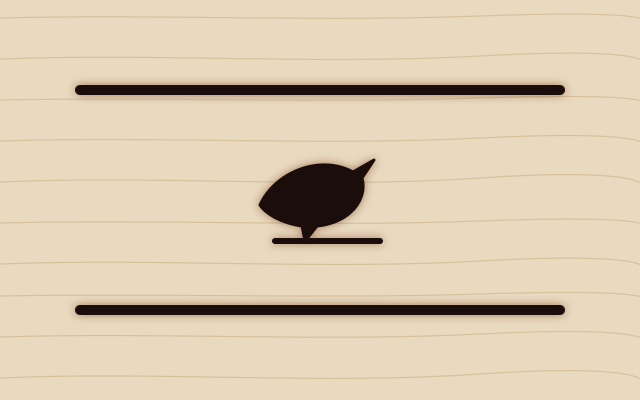
Two stylesheets
theme.css holds the tokens, the palette, the grain and the burn; global.css holds every rule that uses them.
A retemplate template
Pale maple by day, oiled leather by night. The headings are branded into the board, the chrome around it is saddle leather with a running stitch, and the markup is the same as every other template here. Only the stylesheets and the art differ.
Take css/, js/theme.js and assets/ and you have the whole template; everything else on this page exists to show it. These three are the ordinary card with the cattle-stitched class, which binds the board in a leather frame with the stitch running through it.

theme.css holds the tokens, the palette, the grain and the burn; global.css holds every rule that uses them.
Every colour is a light-dark() pair. The toggle in the corner cycles auto, light and dark, and remembers the choice. Neither half is ever black or white.
The palette block in theme.css pastes straight into a retoken site. See the tokens.
The fifty-fifty block gives an image half the width and the text the other half. Add cattle-leather and the block is a leather panel: cream lettering tooled in, thread for the links, a stitch round the edge. Add fifty-fifty-reverse and the image moves to the right.
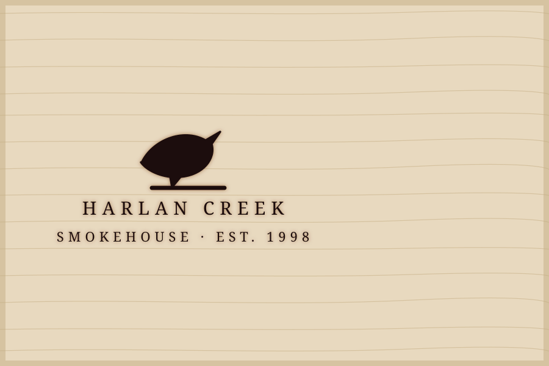
Leather
Navbar, sidebar, footer and the author card are saddle leather with a running stitch. Anything else can be, with one class. Inside leather every component recolours itself: cream text, thread links, brass for the rivets.
How it is built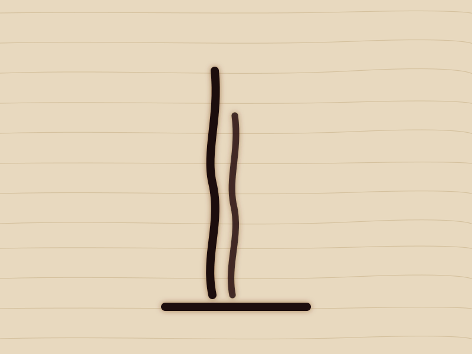
After dark
The dark half is the leather all the way down: deep brown, never black, with a fine pebble grain. The brand stays, tooled in cream instead of burnt. The accent turns to brass, which carries text on leather where saddle brown cannot.
See both halvesStructure carries the information: a name, a price burnt at the end of a dotted leader, a line of description under it. No numbering, no cards. This is cattle-menu, documented under flare; the example smokehouse uses it for the whole menu.
Eight marks burnt into maple. Each thumbnail is bound in a thin leather edge. Click one and the lightbox opens on leather; the arrows are plain links, the close button is a form, and Esc closes it.
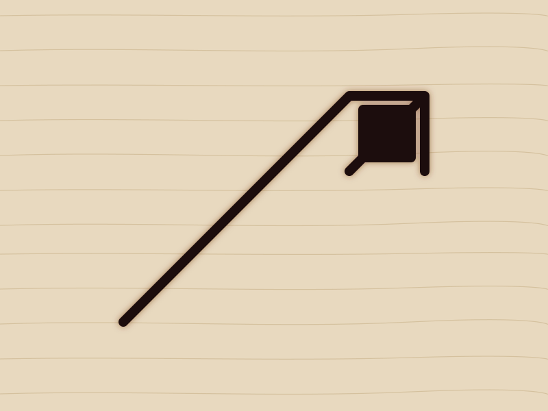
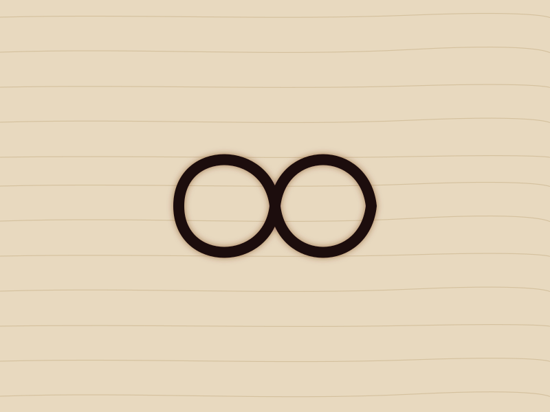
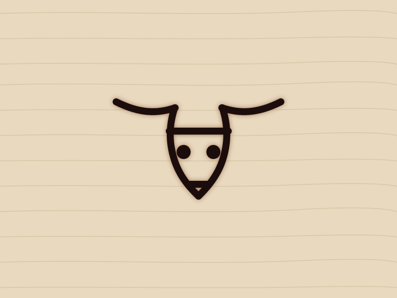
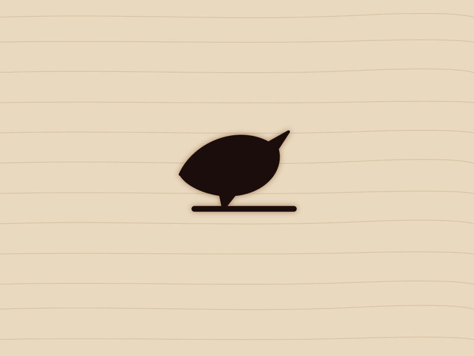
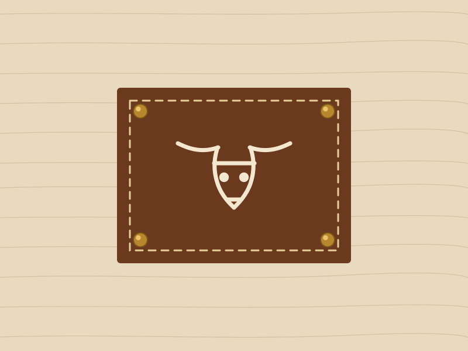
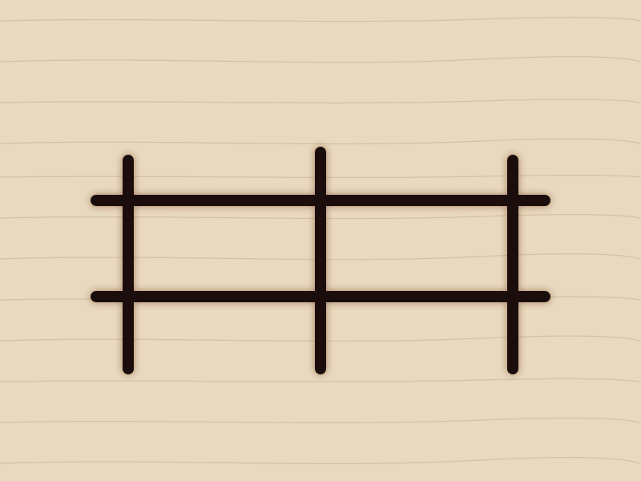
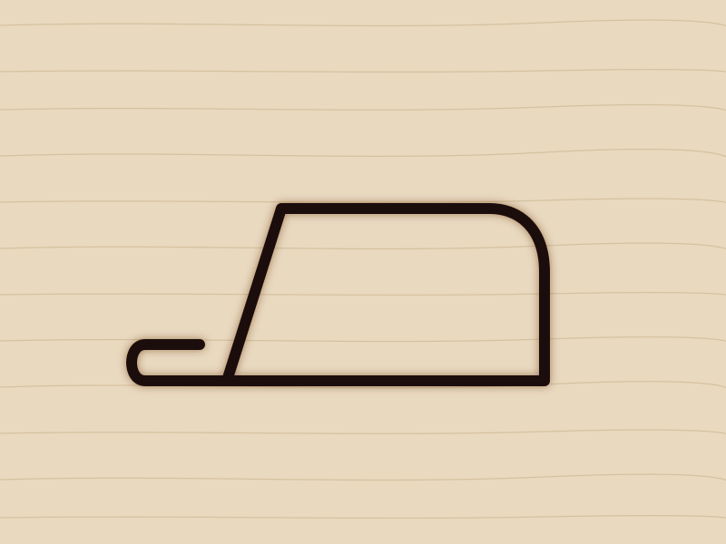
Horizontal cards put the media on the left or, with card-media-end, on the right. On a narrow screen they stack. Cards have no shadow: wood does not float.
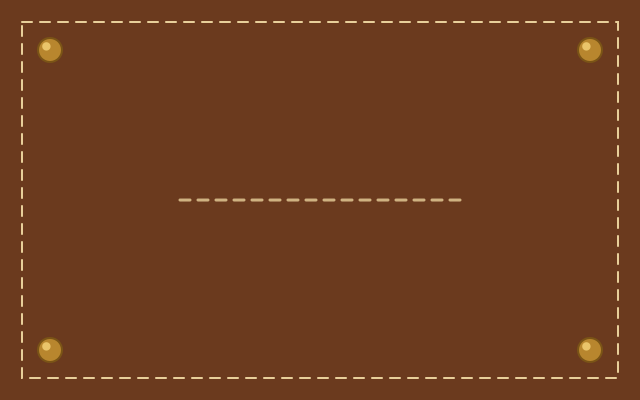
The image takes a little over a third of the width and the text takes the rest.
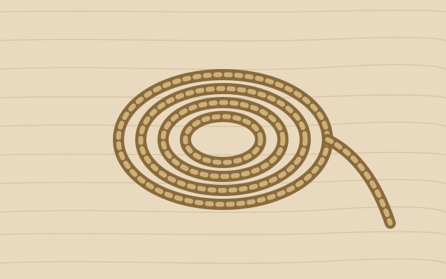
The same card with the order flipped. The markup is the same; only one class differs.
Every template has one feature card with an effect of its own. Cattle's is the brand burning in: rest on it and over most of a second the title chars, the scorch spreads, and the mark is pressed into the picture.
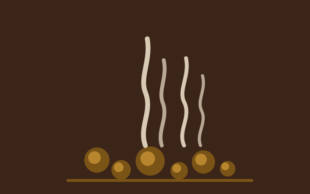
A transition on the title's colour and shadow and two pseudo-elements on the picture. Same card markup as the ones above; it also answers to keyboard focus inside the card.
Accordions are native <details> elements. Give a group the same name and opening one closes the others, with no script. The marker is a brass rivet that flattens to a burnt dash.
No. Copy the folder, link the two stylesheets and the one script, and write HTML.
Alfa Slab One is for h1, h2, the brand, prices and anything you put cattle-brand on. Everything else is Bitter: body copy at 400, labels and buttons at 600 or 700 in tracked capitals.
About forty lines for the scheme toggle, and a one-line onclick on anything that opens a dialog. Everything else is HTML and CSS, the burn included.
A single accordion stands on its own.
css/, js/theme.js, assets/ and this folder's README.md. There is no fonts/ folder unless you self-host the two faces.
Tables sit inside a wrapper that scrolls sideways when they are wider than the page. Headings are tracked capitals over a burnt rule.
| Component | Element | Script | Docs |
|---|---|---|---|
| Accordion | <details> | none | accordion |
| Lightbox | <dialog> | one line | gallery |
| Navbar menu | popover | none | navbar |
| Switch | <input> | none | switch |
| Scheme toggle | <button> | theme.js | theme |
Dialogs are native too. The button below opens one; the dialog closes itself through a form.
Buttons are plates: tracked capitals on wood, on saddle leather (primary) or, with cattle-rivet, on a stitched strap with a brass rivet at each end. A switch is a strap with a rivet that slides. Badges are small stamps; banners carry status.
Prose is what most pages are made of, so .prose styles every construct a markdown renderer produces: headings, lists, quotes, code, tables, footnotes. The slab appears on the first two heading levels and nowhere else in the text; the rest is Bitter at a comfortable size, with real italics.
A template is a promise about what markup will look like. The contract is that promise written down.
The blog post runs the full test document through these rules; defaults shows every bare element without a class on it.